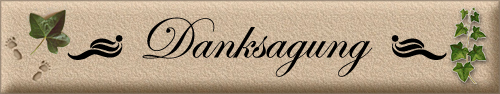
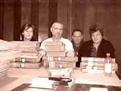

|
|
|
Der Undankbare:
Ein Mensch, der etwas für nichts
bekommen hat und der zu denselben Bedingungen mehr haben will.
Du Engelsgleiche!
Stuhr-Moordeich |

Dankbarkeit
gehört zu den Schulden,
Hiermit möchte ich mich bei allen bedanken, die mir bei der Erstellung Der Ahnenlinien und der Homepage mit Rat und Tat hilfreich zur Seite standen, sei es in technischen Belangen, mit genealogischem Wissen, mit Fach- und Geschichtswissen, beim Lesen von alten Dokumenten und Schriften oder bei den umfangreichen Recherchen zu den einzelnen Familienmitgliedern und natürlich bei denen, die mir eine Kirchenbucheinsicht überhaupt erst ermöglicht haben. Stellvertretend für alle anderen: (Die Eingabe der Namen erfolgt sporadisch und nicht nach Priorität.) Mario ENDE und Steven THIELEMANN für ihren technischen Beistand. Steven THIELEMANN zusätzlich für die Erstellung des Gästebuches und den Besucherzähler und diverser Anpassungen an das Layout der HP, sowie für jedwede Hilfe bei der Erstellung der HP, Bildbearbeitung und anderen technischen Fragen Karl-Helmut ENDE - für sein immer währendes Verständnis für mein Hobby und für seine tatkräftige Unterstützung und Hilfe dabei. Grit und Wolfgang ENDE aus Rostock bei der Erarbeitung der Ahnenlinie ENDE und für so manchen guten Rat. Meiner Cousine Antje HORST für die Recherche zu unseren gemeinsamen Vorfahren väterlicherseits. Meinem Schwager Wolfgang ENDE für die vielen Erzählungen, insbesondere zu den Familien ENDE, SCHADACK, PFALZ und für seine unermüdliche Geduld beim wiederholten erzählen von Familiengeschichten..
EIN BESONDERS GROSSES DANKESCHÖN AN ALLE HIER UNGENANNT GEBLÌEBENEN UND DENNOCH SO WICHTIGEN HELFER: OHNE EUCH WÄRE DIESE UMFANGREICHE SAMMLUNG NICHT MÖGLICH GEWESEN!

Grit und 2x Wolfgang Ende (aus Rostock und
Bad Düben) Angelika
Ende Gut - alles gut!
|